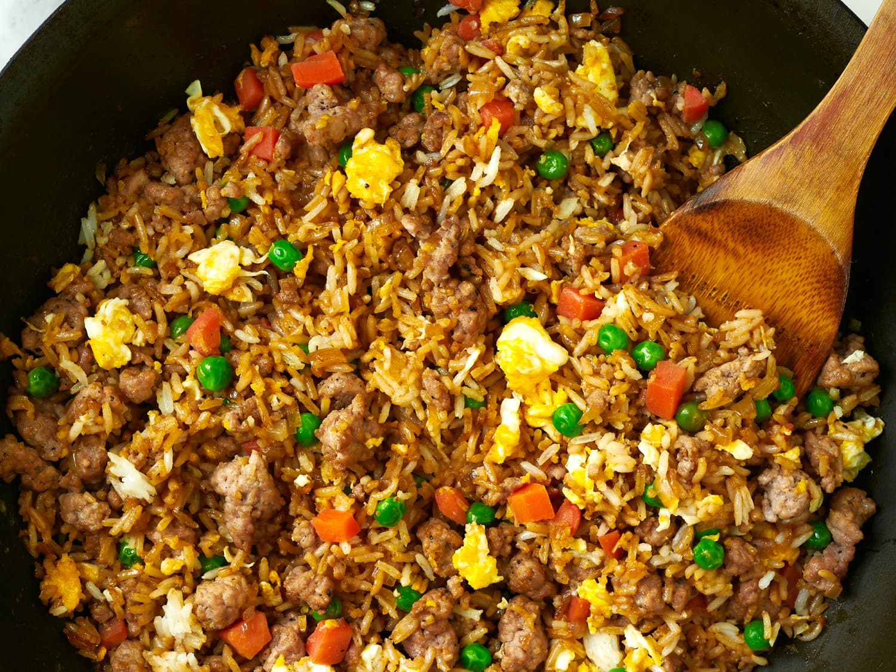

Fried Rice(PORK)

Description
A recipe for making pork fried rice. You can substitute pork with chicken and use any
type of rice that you want to use.
Ingredients
- 1 tablespoon butter
- 1(6 ounce) boneless pork loin chop, cut into small pieces
- 1 green onion, chopped
- 1/4 cup chopped broccoli
- 1 large egg, beaten
- 1 cup cold cooked rice
- 1/4 cup frozen peas
- 1 1/2 tablespoons soy sauce
- 1/8 teaspoon garlic powder
- 1/8 teaspoon ground ginger
Directions
- Gather all ingredients.
- Melt butter in a large non-stick skillet over medium heat. Add pork, green onion, carrot, and broccoli; cook and stir until pork is cooked through, 7 to 10 minutes.
- Transfer pork mixture to a bowl and return skillet to medium heat. Stir egg into the skillet and scramble until completely set.
- Add pork mixture back into the skillet; stir in rice, peas, soy sauce, garlic powder, and ground ginger.
- Cook and stir until heated through, 7 to 10 minutes. Serve and enjoy!